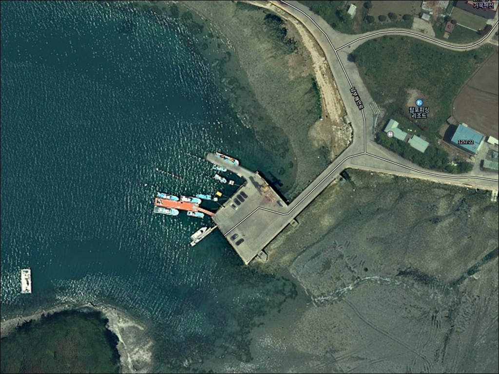
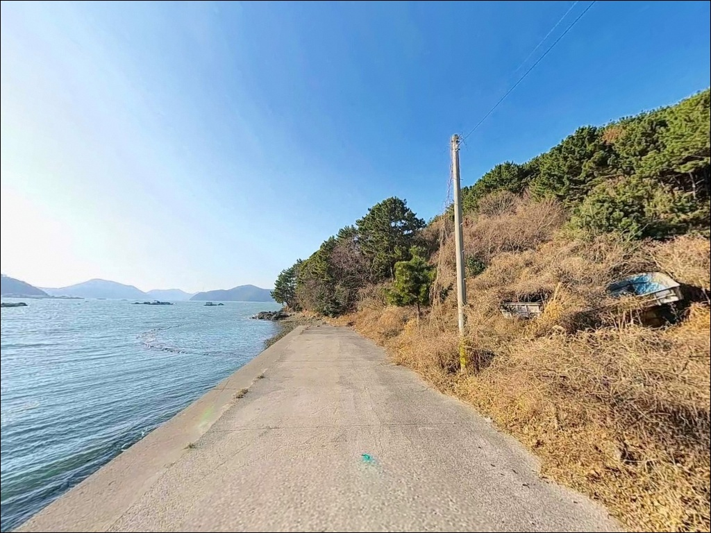
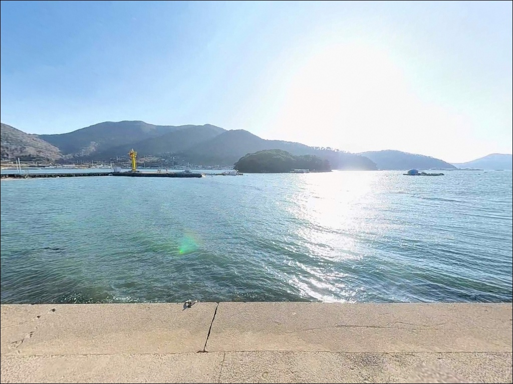
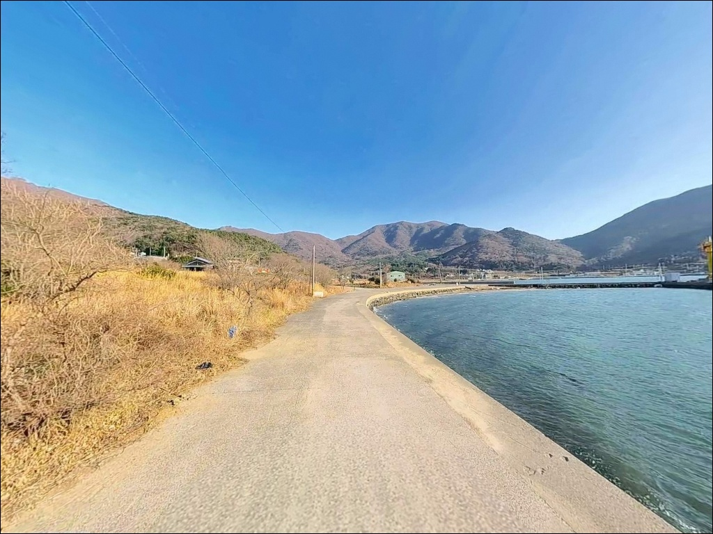
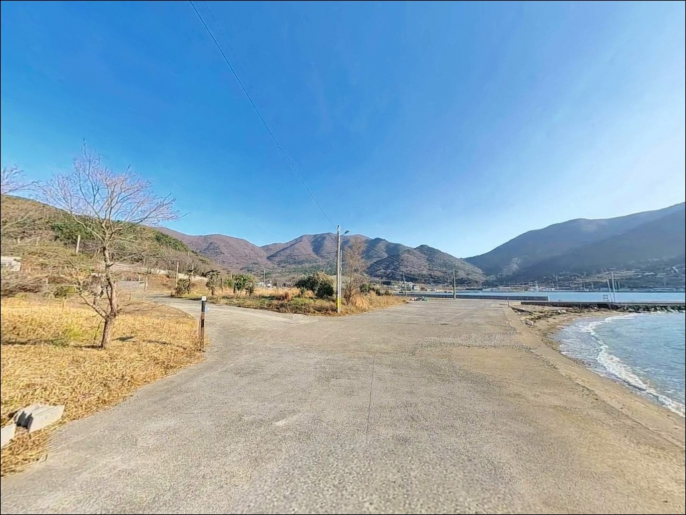
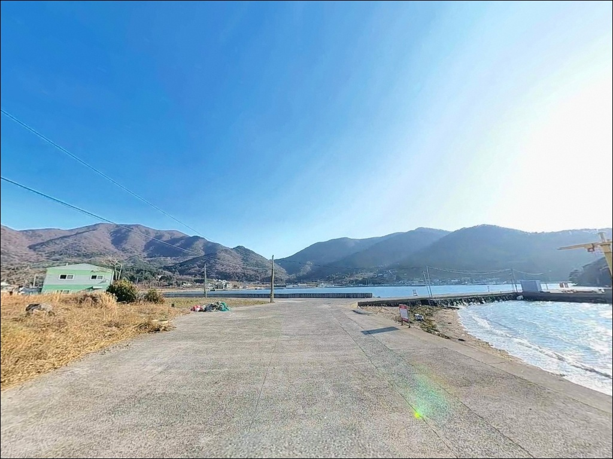
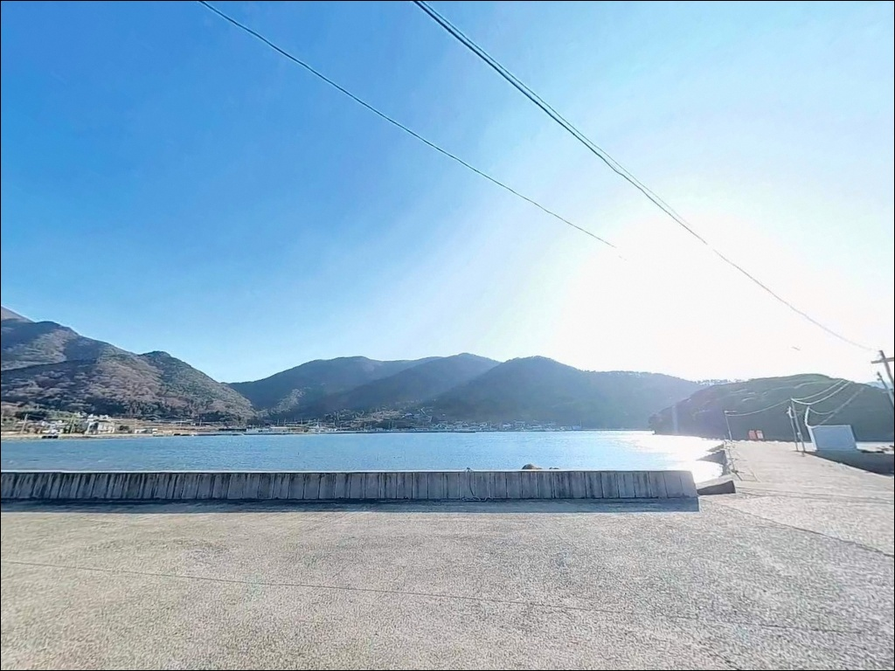
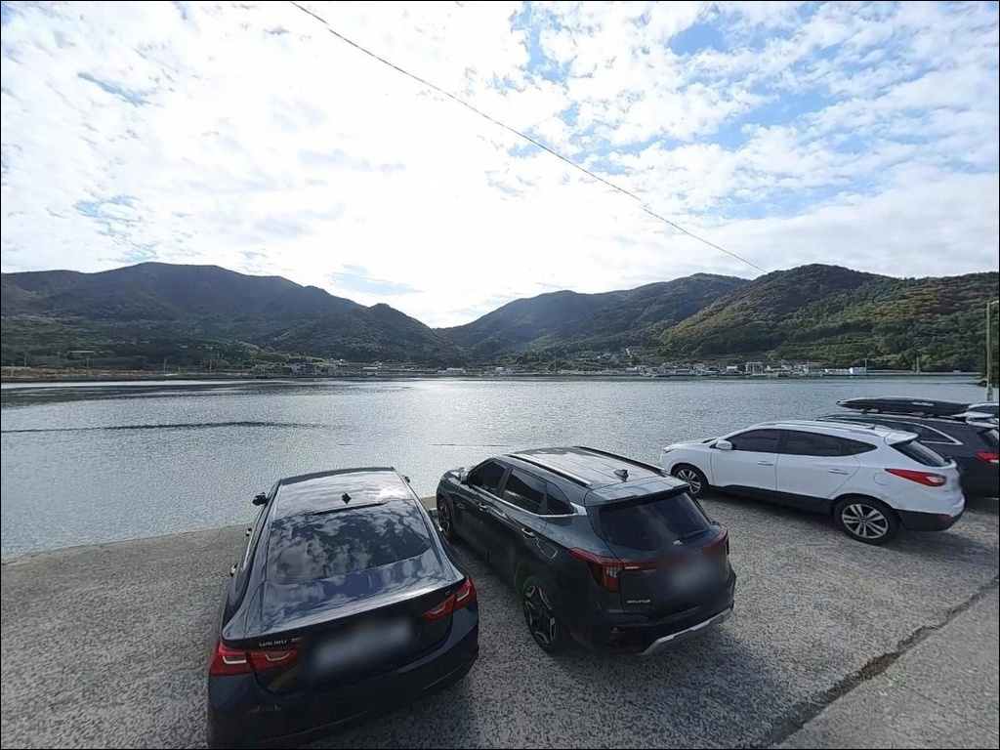
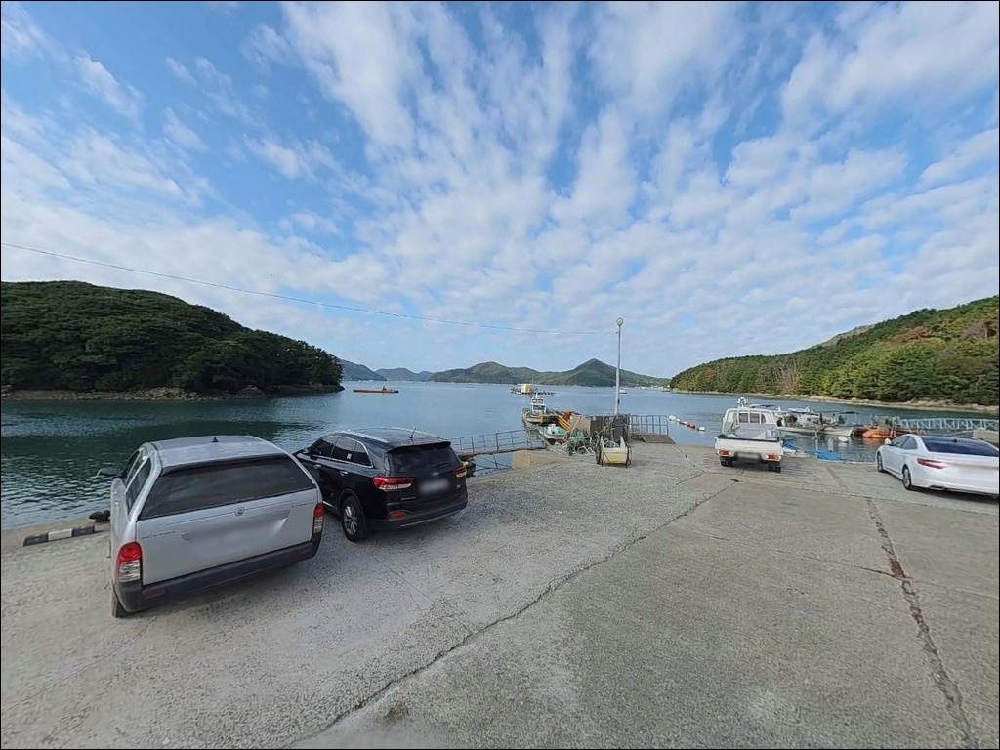

거제 율포리선착장 낚시, 원투낚시와 에깅 포인트로 향하는 방파제 지형 조건
이 페이지에는 광고(제휴 링크 포함)가 있으며, 광고 링크를 통해 구매하면 운영자가 판매 수익 또는 수수료를 받을 수 있습니다. 포인트 사진: 카카오맵 스카이뷰·로드뷰. 이 페이지의 지도·사진 이미지는 카카오맵의 실제 서비스 이미지와 다를 수 있습니다.


포인트 안내
율포리선착장
경남 거제시 동부면 율포리 525-6
내만 구조라서 파도 걱정이 없다고 판단하고
기상 확인을 건너뛰는 경우가 있습니다.
거제 동부 해역은 남동풍이 강화되면
파고가 빠르게 올라가는 구간이 형성되어
방파제 외항 쪽 자리가 통째로 막히는 상황을
맞닥뜨릴 수 있습니다.
율포항은 1972년 지방어항으로 지정된 공식 어항으로,
방파제 215m, 물양장 110m 규모입니다.
거제도 동부 해안선에서
내만의 잔잔한 수면과 외해 개방성을 동시에 품은
중형급 소형 방파제 포인트입니다.
이 글은 율포항의 진입 여건, 지형 구조,
낚시 방식별 공략 조건, 차박 체류 판단 기준에 집중합니다.
조황 단정이나 특정 어종 보장은 이 글의 범위에 포함되지 않습니다.

1. 진입 동선과 포인트 접근성
율포리는 거제도 동부 해안도로에서
마을 안길을 통해 선착장까지 연결됩니다.
진입로는 왕복 1~1.5차선 규모의
해안 마을 도로 구조로,
승용차·소형 SUV 수준이 진입에 적합한 폭입니다.
대형 차량이나 캠핑카 타입의 차량은
출발 전에 진입로 폭을 위성지도로
한 번 확인하고 가는 것이 안전합니다.
주차 후보는 두 곳입니다.
물양장 인근 평지가 1순위이며,
방파제 입구 직전 공터가 2순위입니다.
물양장 인근 부지는 어항 시설 내 평탄한 콘크리트 구간으로
차량 여러 대의 동시 주차가 가능한 수준입니다.
어선 계류 동선을 막지 않는 자리를
먼저 확인하고 주차하는 것이 기본 매너입니다.
방파제 진입은 주차 후 도보로 이동합니다.
선착장 구조상 방파제 입구에서
콧부리까지의 이동 거리는
무거운 낚시 장비를 감안해도
무리 없이 접근 가능한 수준입니다.

2. 차박 환경과 야간 체류 여건
율포리는 소규모 어촌 마을에 인접한 포인트입니다.
마을과 가깝다는 점은 야간 안전감 측면에서는
플러스 요소이지만,
주민 통행과 차량 이동이 산발적으로 발생해
완전한 고립감을 원하는 차박에는 맞지 않는 환경입니다.
조용히 낚시를 마치고 잠깐 눈을 붙이는
단기 체류형 차박에는 나쁘지 않은 조건입니다.
야간 조명은 항로 표시등과 어항 시설등 수준으로
완전한 밝음은 아닙니다.
방파제 상단 이동 시 개인 헤드랜턴은 필수이며,
방파제 끝단에는 난간이 없는 구간이 있어
야간 이동 시 각별한 주의가 필요합니다.
거제 동부 해역 특성상
남동풍이 강화되는 날에는
방파제 외항 쪽에서 파도가 올라옵니다.
기상 예보에서 남동풍 강화 예보가 확인되면
외항 쪽 자리를 피하고
내항 방향 물양장 인근에서 체류하는 것이
안전한 대응 방식입니다.


3. 주변 편의시설 및 인프라 현황
율포리 마을 반경 내에는
대형 편의시설을 기대하기 어렵습니다.
동부면 소재지 방향으로 차량 5분 거리에
편의점과 소형 마트가 있어
기본 식료품과 낚시 소품은
이 동선을 활용하면 됩니다.
하나로마트 거제농협 동부지점이
이 권역에서 활용 가능한 인프라입니다.
응급 상황이나 장비 보충이 필요한 경우에는
거제면 소재지 방향으로 이동하는 것이
현실적인 대안입니다.
낚시 전용 소품(여분 채비, 미끼, 봉돌 등)은
거제시내 낚시점을 출발 전에 들러
미리 갖춰두는 편이 효율적입니다.
율포리 현장에서 조달할 수 있는 낚시 소품은
없다고 보고 준비하는 것이 기본입니다.

4. 방문 전 반드시 챙겨야 할 준비사항
거제 동부면 일대는 남동풍 강화 시
파고 변화가 빠른 해역입니다.
출조 전 기상청 해상특보와 풍향 예보를
반드시 확인하고 출발해야 합니다.
당일 아침 풍향 확인을 습관처럼 가져가는 것이
방파제 외항 쪽 자리 활용 여부를 결정하는
기본 판단 기준입니다.
율포항은 지방어항으로 어선 계류와 어업 활동이
일상적으로 이루어지는 공간입니다.
어선 이동 동선과 어구 적치 공간을
점유하지 않는 것이 현장 매너의 기본이며,
야간에는 계류선과 어구에
채비가 걸리지 않도록 캐스팅 방향을 조정해야 합니다.
구명조끼는 방파제 낚시 전 구간에서 착용합니다.
최신 조황은 출발 전에 꼭 검색해 보시기 바랍니다.
"율포항 낚시", "거제 동부면 방파제 낚시",
"율포리 조황" 키워드로
최근 출조 결과를 확인하는 것이
현장 낚시 방식 선택의 판단 기준이 됩니다.

5. 지형 기반 낚시 여건 분석
율포항은 내만 구조로 조류 흐름이 완만하고
수심 변화가 안정적인 편입니다.
내항과 물양장 구간은 얕은 수심이 유지되며,
방파제 콧부리 외항 방향으로
수심이 7~10m권으로 깊어지는 구간이 형성됩니다.
거제도 동부 지형 특성상
산지가 해안까지 이어져 방파제 외항 측에서
수심 급변 구간이 나타나는 구조입니다.
바닥 지형은 모래와 펄이 섞인 사니질 구간이 중심이며
방파제 주변으로 암초가 산재합니다.
사니질 바닥은 밑걸림이 적어
원투낚시 채비 운용에 유리한 조건이고,
암초 구간은 볼락·우럭 계열 루어낚시
대상어의 서식 공간으로 활용됩니다.
방파제 콧부리 기준 외항 쪽 수심 구간이
이 포인트에서 가장 기대값이 높은 자리입니다.
내만 구조상 물때와 상관없이
낚시 운용이 가능한 날이 많습니다.
단, 조류가 완만하다는 의미가 곧
활성도가 항상 높다는 의미는 아닙니다.
조류 움직임이 생기는 만조·간조 전후 타이밍에
입질 빈도가 올라가는 경향이 있습니다.
최신 조황은 가기 전에 꼭 검색해 보시기 바랍니다.


방파제 외항과 내항에 따라 낚시 스타일 선택이 달라집니다
이 포인트에서 가장 잘 맞는 첫 번째 스타일은
원투낚시입니다.
물양장 인근 사니질 바닥과
방파제 외항 쪽 평탄한 수심 구간은
원투 채비를 멀리 보낸 뒤
바닥층을 탐색하는 방식에 유리합니다.
도다리·보리멸·붕장어 계열을 기대해 볼 수 있는
지형 조건을 갖추고 있습니다.
볼락 루어낚시는 야간 시간대에
이 포인트의 특성을 잘 살릴 수 있는 방식입니다.
방파제 석축 벽면과 암초 경계 구간에서
소형 지그헤드 채비로 천천히 탐색하면
가로등 주변 집어 구간을 중심으로
볼락·우럭 계열의 반응을 기대할 수 있습니다.
가벼운 채비로 벽면을 따라 내리는
드롭샷 방식이 이 포인트 구조와 잘 맞습니다.
에깅은 방파제 외항 쪽 수심 구간을 중심으로
운용이 가능한 조건입니다.
거제 동부권 전역이 갑오징어·무늬오징어
에깅 포인트로 꼽히는 해역이며,
가을 이후 주꾸미·갑오징어가
선착장 인근 바닥층까지 유입되는 시기에는
바닥을 천천히 긁는 운용법이 유효합니다.
찌낚시는 방파제 콧부리 외항 쪽 수심이
확보되는 구간에서 감성돔을 노리는 스타일로 활용합니다.
내만 구조상 조류가 완만해
찌 안정성이 높은 편이며,
봄·겨울 감성돔·볼락 시즌에
맞춰 방문하면 찌낚시 운용 여건이 갖춰집니다.

7. 대안 포인트와 플랜 B 동선
율포항에서 주차 여건이 여의치 않거나
조류 조건이 맞지 않는 날에는
수산방파제가 가장 가까운 대안입니다.
동부면 학동리에 위치하며 율포항에서 약 4km 거리입니다.
방파제 구조가 유사하고
콧부리 수심은 8m 내외로 더 깊은 편이어서
에깅과 찌낚시 운용 여건이 충분히 됩니다.
규모가 더 크고 시설이 안정적인 포인트를
원한다면 지세포방파제가 대안입니다.
율포항 기준 약 8km 거리로
거제 동부권 대표 방파제 중 한 곳이며,
감성돔·볼락·에깅 등 복수 방식의
포인트 다양성이 상대적으로 높습니다.
처음 거제 동부권을 방문하는 낚시인이라면
지세포방파제를 기점으로 잡고
율포항을 병행 탐색하는 동선이 효율적입니다.
차박 여건이 율포항보다 쾌적한 대안을 원한다면
학동몽돌해수욕장 방향이 있습니다.
주차 공간이 넓고 화장실 시설을 확인할 수 있어
장박 차박을 계획하는 경우에는
이 동선이 더 현실적인 선택입니다.

방파제 구조를 알고 가면
율포항이 달라 보입니다
내만 구조의 조용한 어항이라는 점에서
파도 부담 없이 낚시를 즐기고 싶은 낚시인에게
율포항은 잘 맞는 포인트입니다.
원투, 볼락 루어, 에깅, 찌낚시까지
복수 방식의 운용이 동시에 성립하는 구조여서
한 자리에서 여러 스타일을 시험해보기에도
나쁘지 않은 조건입니다.
반면 대형 차량으로 진입을 계획하거나
완전한 격리 환경의 차박을 원하는 경우에는
다소 맞지 않는 포인트입니다.
마을 인접 환경과 협소한 진입로는
사전 확인 없이 방문하면 불편함이 커질 수 있는
변수입니다.
기상 확인, 진입로 사전 점검, 자급 준비,
이 세 가지를 갖추고 가면
율포항은 거제 동부권 내만 낚시의
출발점이 될 수 있는 포인트입니다.
낚시를 마친 뒤 방파제 옆 물양장에
차를 대고 조용히 하룻밤 머무는 차박이라면,
마을 소음에 배려를 갖추는 것만으로도
낚시와 차박을 함께 마무리하기에
무리 없는 출조가 됩니다.